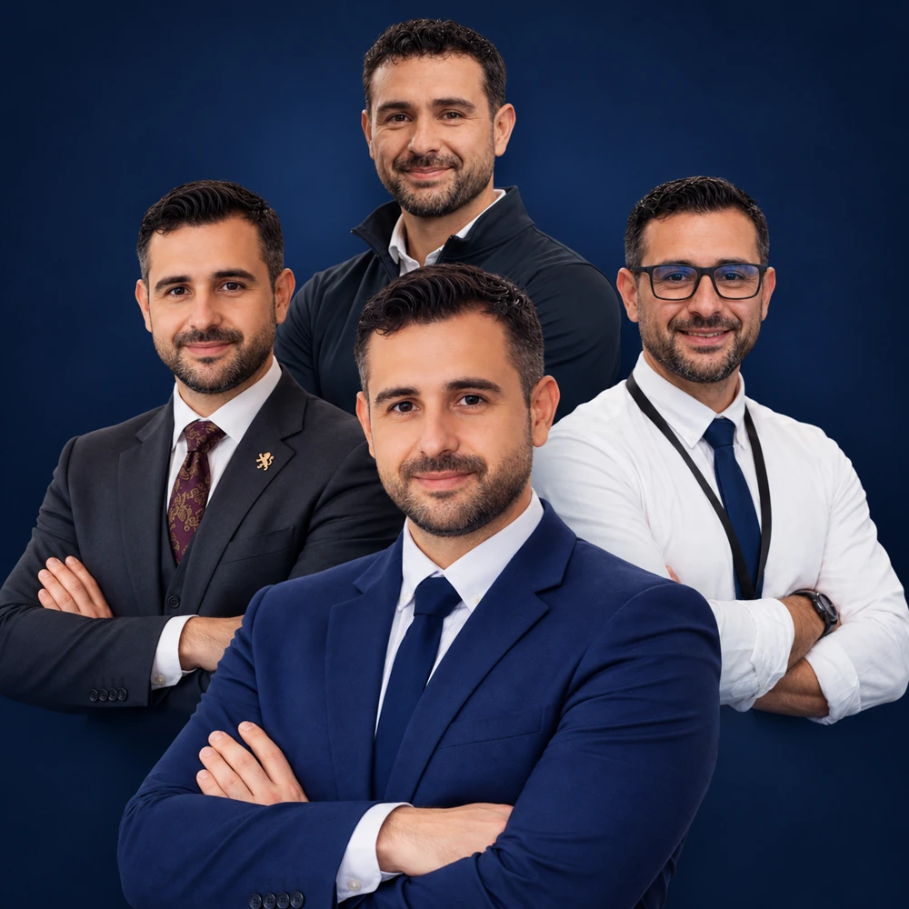
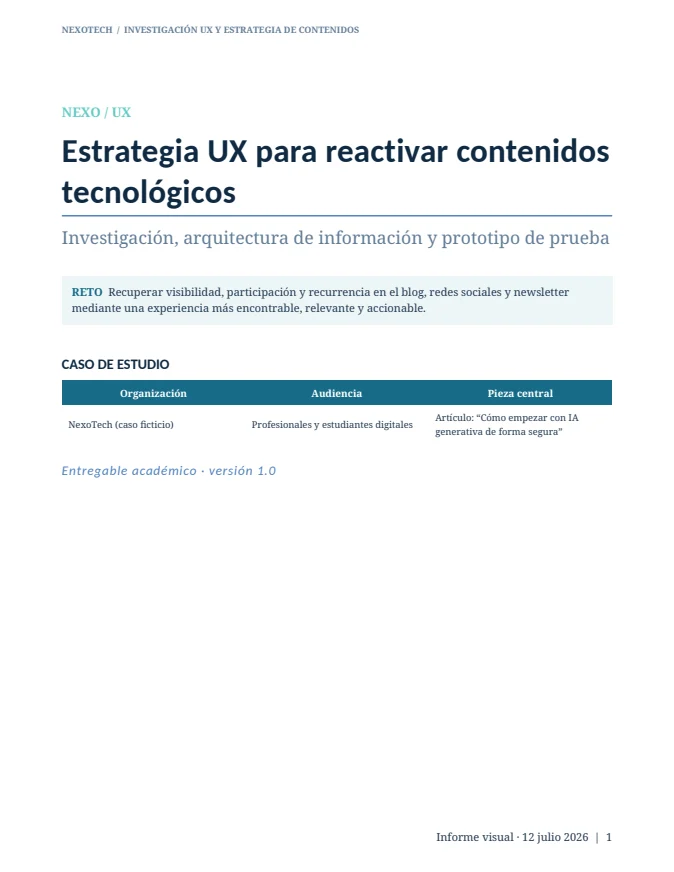

Dirección y servicio
Planificación, coordinación interdepartamental, experiencia del cliente, estándares 5★/5★ GL, recursos, costes y ejecución.
Integro dirección operativa, tecnología y rendimiento humano con una misma lógica: analizar, planificar, ejecutar, medir y mejorar. La experiencia del cliente, la fiabilidad del sistema y el rendimiento del equipo forman parte del mismo resultado.

Hostelería 5★/5★ GL, sistemas, proyectos digitales, entrenamiento, nutrición y mejora continua conectados en una sola visión profesional.
Mi perfil no funciona por compartimentos. Dirección, sistemas y rendimiento comparten una misma disciplina: entender el contexto, ordenar los recursos y convertir complejidad en resultados medibles.



“No separo personas, procesos y tecnología. Los diseño para que funcionen como un único sistema.”RAMÓN A. CURBALÁN VEGA · HUMAN · SYSTEMS · PERFORMANCE
Planificación, coordinación interdepartamental, experiencia del cliente, estándares 5★/5★ GL, recursos, costes y ejecución.
Desarrollo, redes, seguridad, IA y automatización orientadas a resolver problemas reales y reducir fricción operativa.
Entrenamiento, nutrición, hábitos y seguimiento con una visión integral, práctica y progresiva.
Cada división mantiene identidad propia, pero comparte metodología, exigencia y orientación a resultados.
Más de dos décadas en operaciones y liderazgo, combinadas con formación técnica, gestión de proyectos y rendimiento humano.
Trayectoria consolidada en hostelería, restauración, banquetes, eventos y atención al cliente.
Experiencia en hoteles 5★ y 5★ Gran Lujo con foco en estándares, detalle y ejecución.
BEO, staffing, logística, inventario, calidad, KPI, coordinación y gestión minuto a minuto.
Dirección, tecnología, proyectos, formación deportiva, nutrición y mejora continua.
Una metodología simple de explicar y exigente de aplicar. El objetivo no es añadir complejidad, sino reducirla.
Entender objetivo, contexto, restricciones, riesgos y necesidades reales.
Ordenar recursos, responsables, dependencias, tiempos y criterios de éxito.
Coordinar, comunicar y actuar sin perder calidad ni capacidad de adaptación.
Observar indicadores, experiencia, incidencias, carga y desviaciones.
Eliminar fricción, estandarizar lo que funciona y preparar el siguiente ciclo.
Tres áreas conectadas alrededor de una misma lógica de dirección: personas, procesos y sistemas que trabajan en la misma dirección.
Proyectos propios donde convergen operación, diseño, tecnología y ejecución.
Plataforma privada de entrenamiento, nutrición, clientes y hábitos.
ABRIR PROYECTO →Centro híbrido físico–digital con automatización y dispensación inteligente.
ABRIR PROYECTO →Tests, simuladores, prácticos y seguimiento para preparación TAI.
ABRIR PROYECTO →Herramienta de apoyo operativo para inventarios, material y control de eventos.
ABRIR PROYECTO →Proyectos académicos y estudios técnicos que documentan mi forma de investigar, planificar y diseñar soluciones.

Evaluación de una plataforma de alquiler vacacional: comprensión del recorrido, transparencia del precio y barreras de acceso.
Proyecto académico · inspección de prototipo
VER CASO DE ESTUDIO ↗
Propuesta para mejorar la encontrabilidad, la interacción útil y la recurrencia en un ecosistema de contenidos tecnológicos.
Caso académico · organización ficticia
VER CASO DE ESTUDIO ↗
Lanzamiento sensorial de un perfume que conecta una gala presencial, streaming interactivo y cajas enviadas al público online.
Propuesta académica · marca ficticia
VER CASO DE ESTUDIO ↗
Plan integral de inauguración comercial con recepción, protocolo, cóctel, actividades y seguimiento del negocio.
Actividad académica · programa propuesto
VER CASO DE ESTUDIO ↗
Análisis de VMware ESXi y Hyper-V para aplicaciones científicas, entornos Windows/Linux y continuidad de servicio.
Estudio técnico · análisis de alternativas
VER CASO DE ESTUDIO ↗Hostelería · Tecnología · Rendimiento humano · Proyectos propios.
Hablemos →